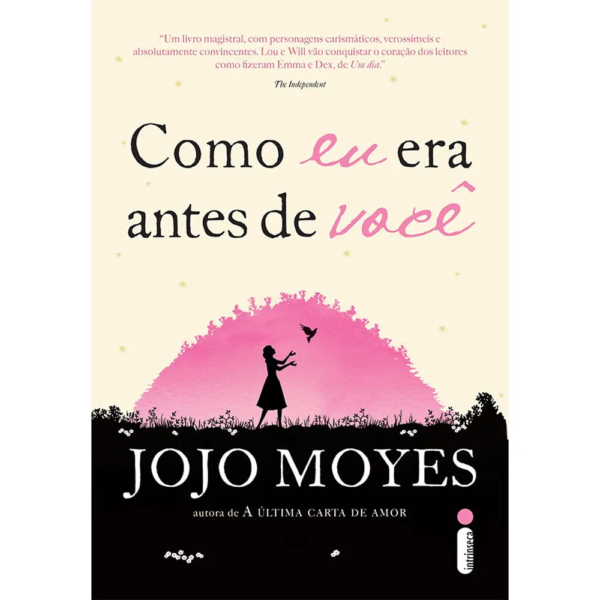

O rico e bem sucedido Will leva uma vida repleta de conquistas,viagens e esportes radicais até ser atingido por uma moto. O acidente o torna tetraplégico, obrigando-o a permanecer em uma cadeira de rodas. A situação o torna depressivo e extremamentecínico, para a preocupação de seus pais É neste contexto que Louisa Clark é contratada para cuidar de Will. De origem modesta, com dificuldades financeiras e sem grandes aspirações na vida, ela faz o possível para melhorar o estado de espírito de Will e, aos poucos, acaba se envolvendo com ele.
1. Baseado em fatos reais A história sobre Will e Louisa é uma ficção, mas Jojo Moyes afirma que a inspiração para criar o livro surgiu a partir de um acontecimento real.
3. Emilia Clarke amou interpretar Louisa Emilia já contou em entrevistas que foi muito natural ser Louisa, pois ela também tem uma personalidade divertida fora das telas. Segundo a atriz, a primeira vez que pode mostrar seu jeito engraçado foi em Como Eu Era Antes de Você.
O Filme "Como Eu Era Antes de Você" é baseado no livro da autora Jojo Moyes
